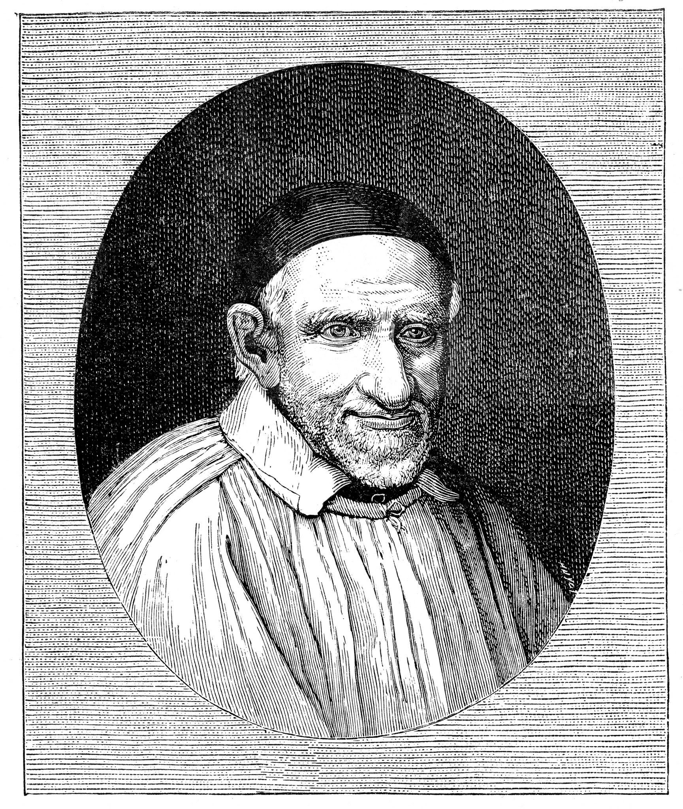

Legacy of Compassion
Tracing the footsteps of Blessed Frederic Ozanam and St. Vincent de Paul in our journey of service.
Quick Facts
- Born: April 1813, Milan
- Founded SSVP: May 1833
- Beatified By: Pope John Paul II
- Feast Day: September 9
Blessed Frederic Ozanam
Frederic Ozanam was born in April 1813 in Milan to Jean and Marie Ozanam. He was the fifth of 14 children, one of only three to reach adulthood. His family, of Jewish origin, had settled in Lyon, France, for centuries. His father, Jean Ozanam, served in the armies of the First French Republic before turning to medicine.
In his youth, Frederic experienced a period of doubt regarding his faith but was strongly influenced by Abbe Noirot. He became a staunch defender of Catholicism, publishing works against Saint-Simonianism and writing for the Association for the Propagation of the Faith.
The Challenge & The Response
While studying law in Paris, Frederic formed a "Conference of History" to discuss literature and history. However, during a heated debate about the Church's relevance, a challenge was issued:
In response, in May 1833, Frederic and a group of young men founded the charitable Society of Saint Vincent de Paul. Under the guidance of Blessed Rosalie Rendu, they began serving the poor in the slums of Paris, famously aiding victims during the cholera epidemic.
Scholar & Professional
Despite his academic success, he remained deeply committed to his faith and family. In June 1841, he married Amélie Soulacroix, and they had a daughter, Marie. He was known as a man of great faith, tender to his family, and loyal to his friends.
Final Years
Frederic remained active in the Society and journalism (founding Ère nouvelle) until his health failed. He passed away on September 8, 1853, in Marseille at the age of 40. He rests in the crypt of St. Joseph des Carmes in Paris.
St. Vincent de Paul
Born in 1581, Vincent de Paul was ordained at 19. Initially ministering to the wealthy, his calling shifted to the marginalized—galley prisoners and the poor.
He urged efficiency in charity: teaching literacy, enabling self-support, and demanding justice alongside charity. Canonized in 1737, he was designated the special patron of all charitable associations in 1883.

Spirit & Structure
Spirit of the Society
Vincentians are united by poverty, humility, and sharing. We reflect the whole family of God, drawn from every background to witness God's love through person-to-person service. We see the face of Christ in those we serve.
Youth in the Society
Youth involvement is intrinsic to our origins. Frederic Ozanam himself was a student when he founded the Society. We encourage planting seeds in young people to nourish the future, inviting them to be inventive in putting charity into practice.
Women in the Society
While initially absent, women have played a crucial role since the merger with the female branch in 1967. Today, women play an active and vital role in the functioning of the Society in India and globally.